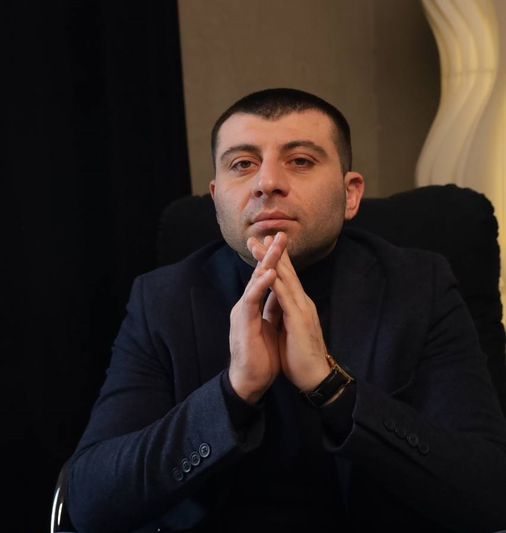

ПСИХОТЕРАПЕВТ · КПТ · EMDR · MINDFULNESSКогда внутри
Когда внутри
становится
слишком много.
Помогаю предпринимателям, руководителям и людям в сложных жизненных периодах возвращать ясность, выдерживать давление и принимать решения, которые действительно ваши.
20 минут · онлайн · понять, с чем мы можем работать
«Я быстро собираю сложный материал в понятную модель»
Два маршрутаС чего начнём
С чего начнём
разбираться?
На диагностической встрече не нужно сразу решить всё. Сначала мы определяем, что происходит и какой формат помощи будет честным и полезным.
01 · Для тех, кто принимает решенияПредпринимателям
Индивидуальная
Предпринимателям
и руководителям
Когда внутренние реакции начинают влиять на управление, ответственность, рост, контроль и дорогие решения.
Перейти в раздел ↗02 · Для себяИндивидуальная
психотерапия
Тревога, стресс, выгорание, отношения, травматический опыт и другие запросы, с которыми сложно оставаться одному.
Перейти в раздел ↗«Цель терапии — не стать другим человеком. А получить возможность выбирать, как именно быть собой».— принцип работы
О специалистеПсихотерапия,
Психотерапия,
которая видит
человека целиком.
Я соединяю профессиональную подготовку психотерапевта с 11 годами собственного опыта в ресторанном бизнесе — чтобы понимать не только слова, но и контекст, в котором человек живёт и работает.
Обо мне и квалификация ↗